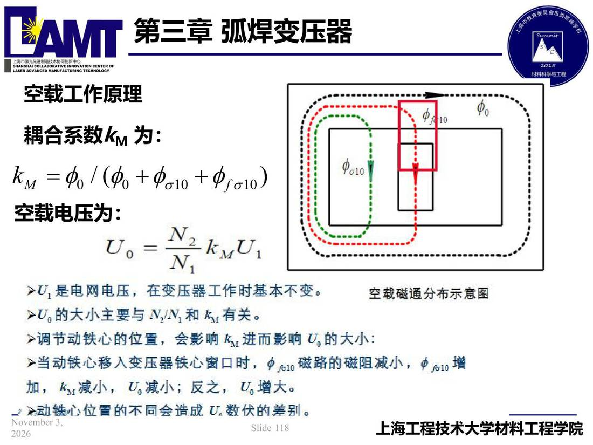

03 第3章 弧焊变压器/p118 空载工作原理
p118 空载工作原理
📄 原文：📄 弧焊电源 课件（PDF 第 118 页）（幻灯片 118/273；PDF 第 118 页）
空载工作原理

讲义原文
耦合系数kM 为：
空载电压为：
页面文字（OCR 机读，可能有错字，以页图为准）
空载工作原理 耦合系数KM 为： hn=$1（0+$o10 +$fo10） 空载电压为：
U，是电网电压，在变压器工作时基本不变。 空载磁通分布示意图 U。的大小主要与N/N」和k有关。 调节动铁心的位置，会影响 k进而影响U。大小： 当动铁心移入变压器铁心窗口时，中51磁路磁阻减小，中51增 加，ku减小，U减小；反之，U。增大。 》动铁心位雷的不同会造成 U.数伏的差别。